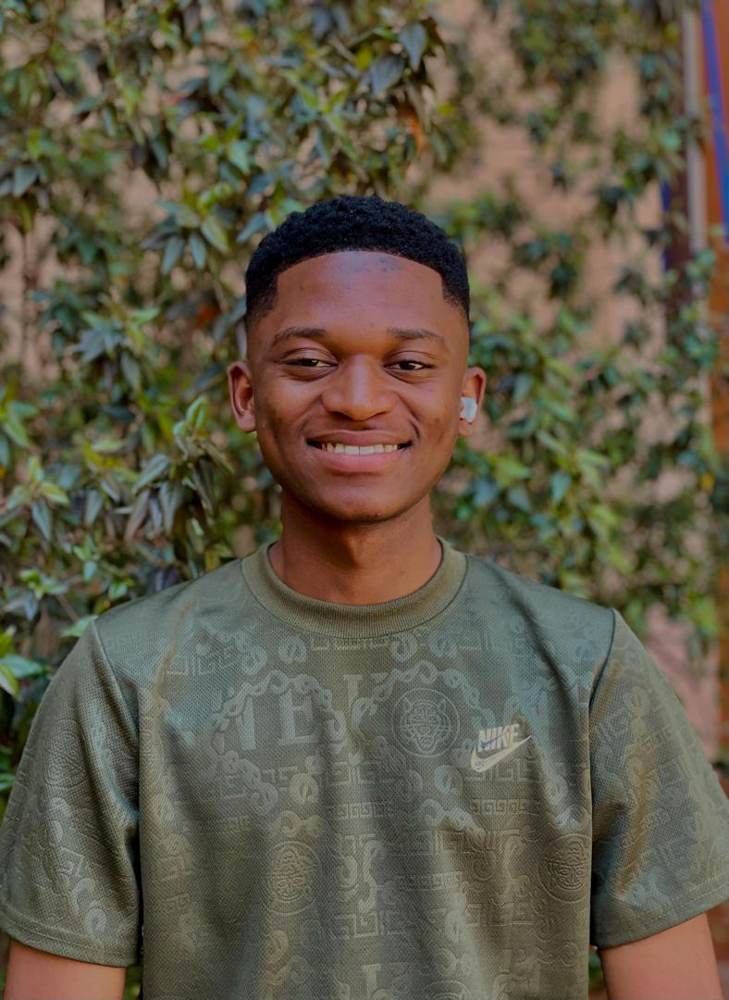
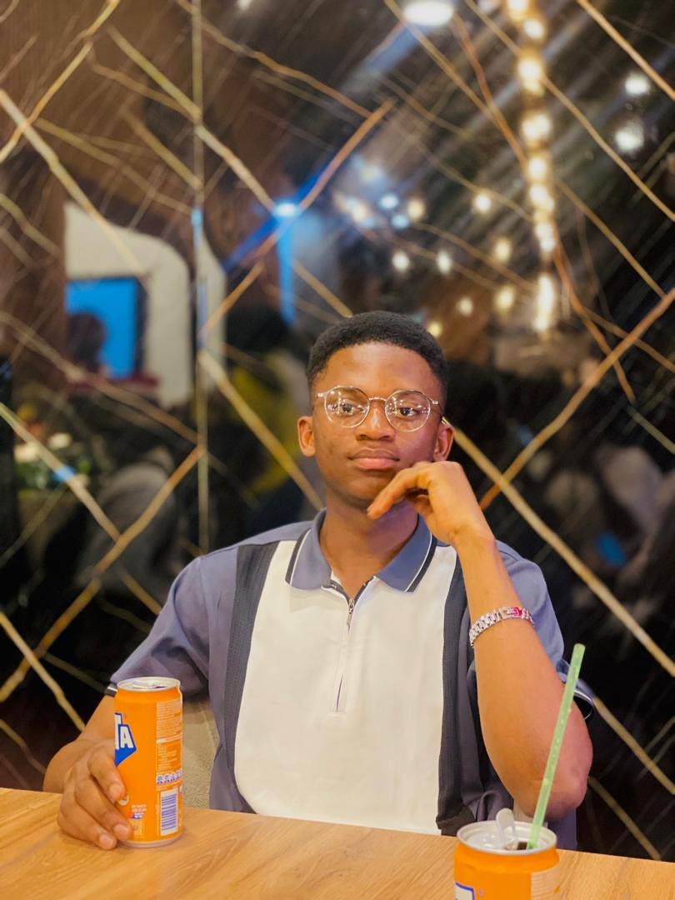
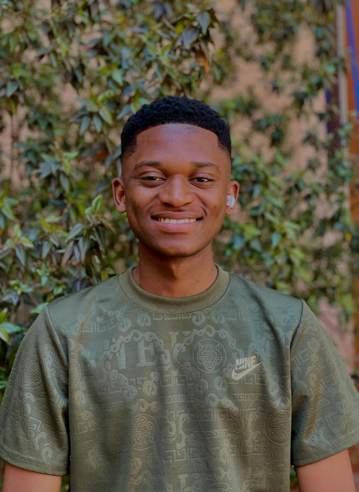
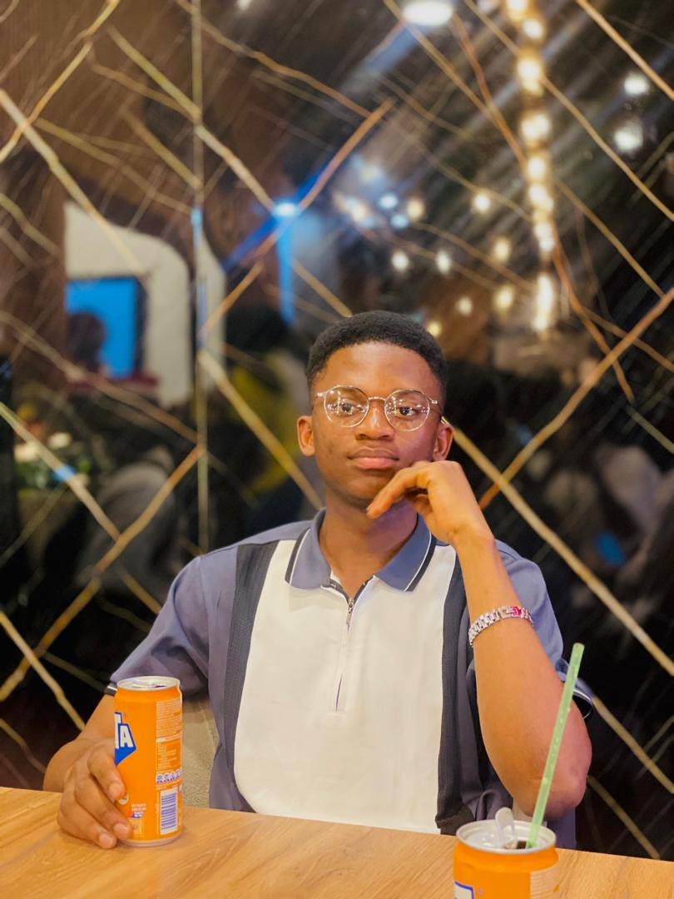

Bonjour,
Je me nomme Mwamba Assani Givens. J’ai grandi à Kinshasa, une ville que j’ai eu l’occasion de découvrir à travers plusieurs de ses provinces. J’aime beaucoup voyager, découvrir de nouvelles cultures et rencontrer des personnes de différents horizons.
Depuis mon enfance, je suis passionné par les machines et l’innovation. C’est cette passion qui m’a poussé à choisir le domaine de l’informatique à l’ESI, avec l’objectif de devenir un futur ingénieur capable de concrétiser mes idées.
 


